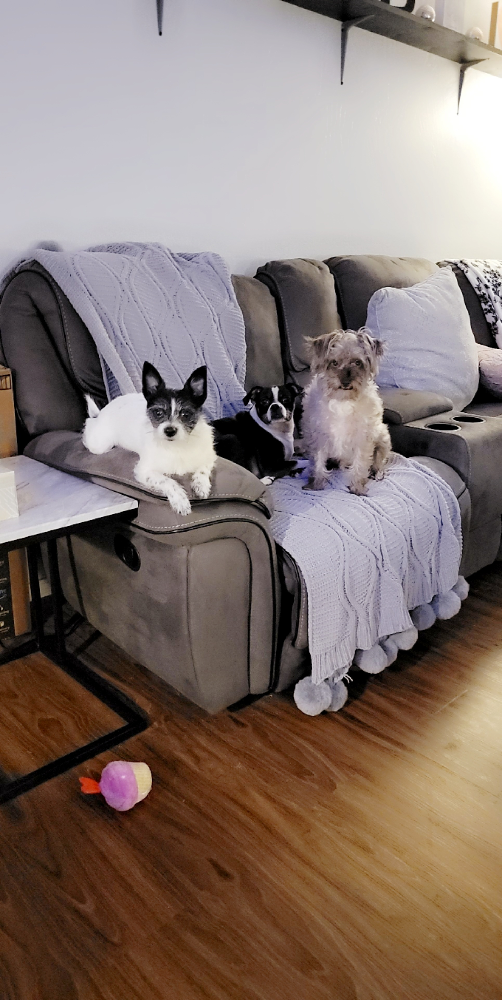

My name is Bridgette Trevino. I am 27 years old and I have been married for the past three years. I have 3 dogs, Titus, Tipsy, and Tenzin.  I am a support representative at one of the credit unions here in Amarillo.
I originally started my college career in 2013 when I was 18 years old. My orginal feild of study was Secondary Education with an emphasis on Art and Art History. I left school for financial reason after one year, and a few years later I started working in financial institutions and fell in love with it.I went back to school in 2020 and received my associate's degree in Business Administration at the beginning of August this year.
I am now studying to get my bachelor's degree in Computer Information Systems. I plan to use this degree to not only advance in my current career, but also grow as a person.My goals are to: